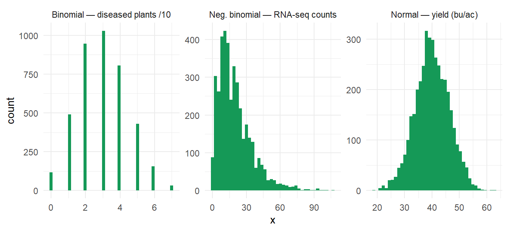

flowchart LR
A[Populations<br/>vs samples] --> B[Distributions<br/>normal · binomial · Poisson · NB]
B --> C[Hypothesis testing<br/>p-values · errors · power]
C --> D[Confidence<br/>intervals]
D --> E[Experimental design<br/>replication · randomization · blocking]
E --> F[Multiple testing<br/>preview for GWAS]
Week 0a — Biostatistics Primer
The concepts every analysis rests on
1 What biostatistics is
Biostatistics is the science of learning from biological data in the presence of variation. Two plants of the same genotype never yield identically — the job is to separate signal (genetics, treatment) from noise (environment, measurement) and to state honestly how sure we are.
2 Populations, samples, and estimation
- Population: every canola plant that could ever be grown from a cultivar.
- Sample: the 200 plots you actually harvested.
- Parameter (unknown truth, e.g. true mean yield μ) vs estimate (your sample mean x̄).
Statistical inference quantifies how far x̄ may sit from μ.
3 Distributions you will meet constantly
Code
library(tidyverse)
set.seed(1)
d <- bind_rows(
tibble(x = rnorm(4000, 40, 6), dist = "Normal — yield (bu/ac)"),
tibble(x = rbinom(4000, 10, .3), dist = "Binomial — diseased plants /10"),
tibble(x = rnbinom(4000, mu = 20, size = 2), dist = "Neg. binomial — RNA-seq counts")
)
ggplot(d, aes(x)) + geom_histogram(bins = 40, fill = "#159957") +
facet_wrap(~dist, scales = "free") + theme_minimal()
| Distribution | Crop example | Model family |
|---|---|---|
| Normal | yield, height, oil % | linear model |
| Binomial | disease incidence | logistic GLM |
| Poisson / Negative binomial | counts; RNA-seq reads | count GLM (NB handles overdispersion) |
4 Hypothesis testing in five sentences
- State a null H₀ (e.g., “no yield difference between lines”).
- Compute a test statistic from the data.
- The p-value = probability of a statistic at least this extreme if H₀ were true. It is not the probability H₀ is true.
- Type I error (α): rejecting a true H₀ — false positive. Type II (β): missing a real effect. Power = 1 − β, driven by replication, effect size, and noise.
- A tiny p with a trivial effect size is not a finding — always report effect sizes.
Code
t.test(extra ~ group, data = sleep) # classic built-in example
Welch Two Sample t-test
data: extra by group
t = -1.8608, df = 17.776, p-value = 0.07939
alternative hypothesis: true difference in means between group 1 and group 2 is not equal to 0
95 percent confidence interval:
-3.3654832 0.2054832
sample estimates:
mean in group 1 mean in group 2
0.75 2.33 5 Confidence intervals
A 95% CI is the set of parameter values compatible with the data: across repeated experiments, 95% of such intervals capture the truth. Prefer CIs to bare p-values — they show magnitude and uncertainty.
6 Experimental design — where good statistics starts
- Replication — quantifies noise; no reps, no inference.
- Randomization — protects against hidden bias (soil gradients).
- Blocking — put comparisons close together: RCBD, alpha-lattice, row–column designs used in every serious yield trial. Week 1 models these directly.
7 Why multiple testing matters (GWAS preview)
Test 1 SNP at α = 0.05 → 5% false-positive risk. Test 500,000 SNPs → ~25,000 false positives expected under the null. Week 2–3 pages use Bonferroni and FDR to fix this.
8 Exercises
- Simulate 1,000 t-tests under the null (
rnormboth groups). What fraction have p < 0.05? Why? - For a trait with σ = 5 and a true difference of 2, use
power.t.test()to find n per group for 80% power. - Sketch (on paper) an RCBD for 20 lines, 3 blocks, on a field with a known fertility gradient.